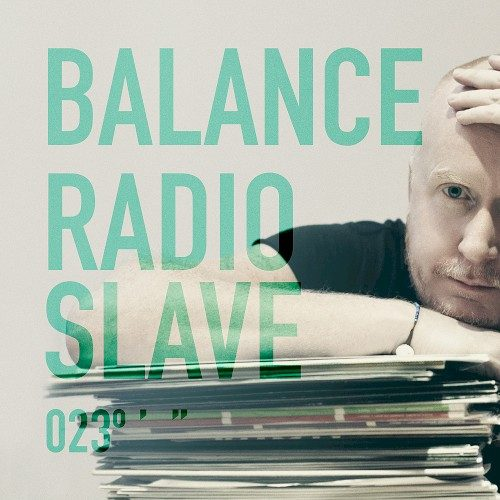

Compilation Of The Month - Balance 023 Mixed By Radio Slave


After a steady run of installments from Deetron, Nic Fanciulli and Funk D’Void, plus a critically acclaimed launch from Jozif to their Presents offshoot this year, the Balance team have selected another steady hand to continue the series in the form of Radio Slave AKA Matt Edwards.
The face behind the Rekids label, and a true force in house and techno over the past five years, he has been allowed to indulge his experimental tendencies on Balance 023.
While the ‘White Skies’ mix sees him crafting a familiar stripped-back journey into clubland, the second ‘Maestros & Memories’ mix sees him dabbling in the sort of downtempo vibes you might expect to hear on a release from his Pyramids of Mars experimental offshoot label.
Here Edwards offers us a few insights into the process of pulling it all together.
How were you selected to mix this compilation?
James Masters [from Rekids] and I had been speaking to Tom Pandzic at Balance for quite some time, and I've always wanted to do a mix for this series.
I don't often do commercial mixes as it's usually impossible to get the tracks you really want, but Tom managed to get around 90 percent of the proposed tracklisting, so I knew I could really express myself over the two discs.
The 'Balance' brand has quite a heritage behind it, and it's one of the strongest compilation series out there. How did this impact how you approached your mix. With it being a double disc compilation I knew I could dig deep into my record collection and pick some of my all time favourites, as well as showcase new artists and also use a lot of music that isn't available digitally.
I feel the Balance series, like Fabric, is something music lovers look forward to & it's a great way of finding out about unknown artists or obscure labels that might lead the consumer to go & buy the records...
You've taken the approach of one mix on the clubbier spectrum, and the other with more of a downbeat vibe. Did this seem the most obvious direction for your 'Balance' entry?
It might be an obvious direction, but this works perfectly for me. I consume and love so many types of music that I could easily do a 10-disc compilation going from Italo disco, jazz to pop rock and techno. So with the Balance mixes I wanted to present a concentrated snap shot of what I’m about musically. The music that has influenced me from the early 90s, to now.
Tell us about how you selected the tracks for this compilation, was there a process and how long did it take? Were there are any tracks you weren’t able to license that you wish were on here and do you have any favorite tracks on this mix we should know about?
It took a long time to get all the tracks licensed, and Tom from Balance did a great job. With all commercial mixes you never know how the mix will turn out until you receive the final list of approved tracks. And as I was sick earlier in the year for over 6 weeks, the compilation was delayed and this actually worked in my favour as we had more time to really get the songs I wanted.
I was so happy that we could use the Slum Village track One. This was such an inspiration to be me when it came out and J Dilla's work really influenced my productions as Rekid. Also having the Sakamato track from Babel meant so much to me as I love his work and this song was crucial to the compilation. I went through a break up with my girlfriend whilst putting this compilation together, and Only Love Can Conquer Hate was the perfect track title when I was selecting tracks for the mix. As for tracks we couldn’t get. I'll keep this a secret as you never know, we might get them next time.
Was this mixed digitally or on two turntables and a mixer?
Nearly 80 percent of the tracks came from vinyl and I recorded these at home using a UREI rotary mixer and then I used Pioneer CDJ2000s to check the mixes and later I recorded the mix using Ableton with my good friend Alexkid in Berlin. I was running out of time due to being in the states for WMC and I had only a few days to get this done, so I prepared the mix and then Alex and I recorded it in 2 days.
Do you feel there is still room for a commercial DJ mix in a crowded marketplace and free podcasts?
Well seeing as podcasts are mainly unlicensed, there should be room for commercial mixes. The problem is that everyone is doing podcasts and DJ mixes, meaning they aren't as special as they once were.
Most clubs and DJs are recording and posting their sets. You can watch everyone on YouTube and in general we're overloaded with DJs and labels wanting to promote themselves through podcasts and mixes. So, it's much harder to present something special that people will want to buy.
But saying this, I feel the Balance series, like Fabric, is something music lovers look forward to and it's a great way of finding out about unknown artists or obscure labels that might lead the consumer to go and buy the records, and I still believe there are people out there who still want to support labels and artists by buying and paying for music.
Slave to the music - Radio Slave mixes Balance 023
01. Radio Slave - Leaving Home… The Elevator Experience
02. DJ Bone - Change (Accapella)
03. Stephan G & The Persuader - Kaos
04. Julien Perez - Road to Dub
05. Delano Smith - Partier (Makam mix)
06. Frost (Of) - Da Drop Suri (Rhadoo mix)
07. Pooley & Parker - Lurchen Und Eulen (Radio Slave mix)
08. Jeremy - Rhythmus
09. Brommage Dub - Untitled (Dub One)
10. Timeline - Ghosts of Graystone
11. Vadim Svobada - Pattern 18
12. Nina Kraviz - Choices (Fred P Reshape)
13. No Smoke - Koro Koro (Dub)
14. Brotherhood - Memorial Smith
15. Sandy Rivera - Liquid Interlude w/ Joe Claussell - Animation (Unchainedpella Joe Claussell mix)
16. Melchior Productions - Descendants
17. Radio Slave - Tantakatan (Prins Thomas mix)
18. Larry Heard - First Call of the Morning
19. Radio Slave - Lincoln Boulevard